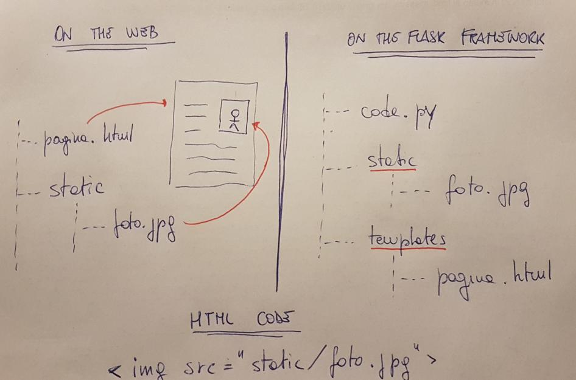

Python: Flask Web Framework
Uno Web Framework rappresenta una collezione di librerie e moduli che permette ad uno web developer di scrivere applicazioni web senza occuparsi dei dettagli di basso livello.
Flask è uno Web Framework scritto in Python,
basato sul toolkit WSGI Werkzeug e sul template engine Jinja2.
WSGI (Web Server Gateway Interface) è una specifica che definisce una interfaccia universale di comunicazione fra un server web e una applicazione web: Werkzeug è semplicemente una implementazione WSGI utilizzata da Flask.
Jinja2 è un template engine molto popolare per il linguaggio Python. Un sistema di web template combina un template (uno schema, uno scheletro) con delle sorgenti dati per creare una pagina web dinamica.
Flask è disponibile in pochi istanti tramite pip:
Oppure dall'interfaccia di Thonny per la gestione dei pacchetti (sottinteso: cerca Flask... Installa... Attendi... Boom!)
Primi esempi con Flask
La più semplice applicazione sviluppabile con la libreria Flask è strutturata in questo modo:
Se la eseguite con Thonny essa creera un avviso tipo questo:
# Running the app with options chosen by Thonny. See Help for details.
* Serving Flask app 'HelloWorld' (lazy loading)
* Environment: development
* Debug mode: off
* Running on **http://127.0.0.1:5000/** (Press CTRL+C to quit)
Cliccando sul link http://127.0.0.1:5000/ o aprendolo direttamente nel browser vedremo una pagina semplice semplice con scritto "Hello, World!".
A vederlo così non sembra difficile, ma ci sono alcune cosine che risultano un po' strane a prima vista, provo a commentare tutto questo primo codice e a spiegare la logica con cui si sviluppa utilizzando Flask.
Importiamo l'oggetto Flask dal modulo flask
Questa operazione è l'operazione di base per lavorare con il modulo Flask: non c'è molto altro da commentare se non che siamo già pratici di questa modalità e che arriveranno man mano altri oggetti dal modulo flask, secondo necessità.
Creiamo l'oggetto Flask che gestisce la nostra applicazione
Tecnicamente questo oggetto rappresenta il server web... ovvero il software che fornisce le pagine web agli utenti (che le richiedono tramite i browser).
Per funzionare ha bisogno di un nome (si possono eseguire più oggetti contemporaneamente, ma devono avere nome diverso).
Definiamo la funzione da eseguire.
Lo so, ho saltato la riga "complicata". Ma siccome ho bisogno di più spazio per spiegarla... faccio prima questa che è facile.
La funzione in oggetto si chiama come vi pare e restituisce una stringa: quella stringa sarà il contenuto della pagina web che vedremo sul browser.
Impostiamo il decoratore della nostra applicazione
Un decoratore è una struttura Python relativamente complessa che si abbina ad una funzione
(quella che indicate sotto alla riga con la @) e che ne modifica il comportamento (la decora).
Il decoratore route, definito nella classe Flask di cui app è un oggetto si comporta in questo modo:
quando il PATH dell'URL richiesto corrisponde al suo parametro esegue la funzione abbinata e restituisce
come contenuto della pagina WEB ciò che la funzione ritorna.
Il decoratore del nostro esempio viene scatenato perché il link in questione è http://127.0.0.1:5000/: il PATH di questo URL è effettivamente la stringa "/".
Se volessimo "aggiungere una pagina" al nostro sito, raggiungibile all'URL http://127.0.0.1:5000/nuovapagina allora dovremmo aggiungere al nostro codice un nuovo decoratore abbinato ad una nuova funzione: una cosa del tipo
@app.route("/nuovapagina/")
def nuovapagina():
s = "<h1>Ciao</h1>
s += "Sei sull'altra pagina..."
return s
Spero sia tutto chiaro fin qui!
Avrete notato che Thonny esegue la app di Flask nell'indirizzo locale 127.0.0.1,
che non è raggiungibile dall'esterno. Per cambiare questo comportamento, eseguite in maniera esplicita la
funzione run() terminando il codice con una cosa tipo:
Esercizio svolto
Ho scritto la mia bella pagina web in HTML, CSS, JS e via discorrendo. Ho tutto pronto nel file "pagina.html": come la rendo disponibile online?
Nella stessa cartella della pagina web creo uno script Python con il seguente codice:
from flask import Flask
app = Flask(__name__)
@app.route("/")
def index():
file = open("pagina.html")
content = file.read()
file.close()
return content
L'esercizio svolto è sbagliato!
In che senso sbagliato... l'esercizio è giusto. Funziona! L'ho appena provato... inoltre ha senso, combacia con la teoria spiegata nella pagina precedente... Cosa ha di sbagliato?
In realtà nulla.
Il fatto è che tramite Flask è possibile fare le cose in maniera addirittura più semplice!
Ho provato a disegnare uno schema per spiegare il concetto... se a sinistra (on the web) descrivo come scriveresti una normale pagina web, a destra (on the Flask framework) descrivo come andrebbero organizzati i file.

Il web framework Flask considera (scontata) la presenza di 2 directory:
- la cartella static, che andrà a contenere tutti file "statici" del sito: immagini, css, javascript, etc...
- la cartella templates, che andrà a contenere tutti i file html del sito. Vengono definiti templates e non sono considerati statici perché possono essere completati o modificati tramite codice andando a creare contenuti dinamici.
Quando si utilizza la cartella templates, il (poco) lavoro svolto nell'esempio svolto
si fa in meno di una riga di codice, tramite la funzione render_template
from flask import Flask,render_template
app = Flask(__name__)
@app.route("/")
def index():
return render_template("pagina.html")
Variabili dinamiche
Nel parametro del decoratore è possibile inserire delle variabili dinamiche marcando
alcune parole con le parentesi angolari: <variable>.
Questo è uno di quegli innumerevoli casi in cui un esempio vale più di mille parole...
from flask import Flask
app = Flask(__name__)
@app.route("/post/<id>")
def showPost(id):
# do something...
return "the post you're searching for has id " + id
@app.route("/<name>")
def test(name):
return "Hello " + name
@app.route("/<val1>/<val2>")
def dai(val1, val2):
return "val 1 = " + val1 + ", val 2 = " + val2
Come vedete, è possibile generare una pagina specifica a seconda dell'URL utilizzato e avendo magari un "template" di riferimento per la stessa...
In effetti è proprio così: guardate che roba.
Create una pagina web chiamata welcome.html in cui digitate il seguente codice HTML
Come vedete questa sintassi non è esattamente HTML... questo è Jinja2, quel web template che dicevamo permette di creare pagine dinamiche... ricordate?
Salvata la pagina nella cartella dei templates, il codice che la fa funzionare è semplicemente questo:
from flask import Flask,render_template
app = Flask(__name__)
@app.route("/user/<name>")
def index(name):
return render_template("pagina.html", nome_utente=name)
Adesso vi basta eseguire questo script e visitare il link http://127.0.0.1:5000/user/unnomequalsiasi ...
Redirection Behaviour
Le due seguenti route sono diverse per la presenza o meno dello slash finale:
@app.route("/home/")
def home():
return "the home page"
@app.route("/about")
def about():
return "the about page"
Nel primo caso (con lo slash alla fine) Flask immagina di riferirsi ad una cartella (da cui pescare il file index.html): se l'utente digita
l'URL http://host:port/home (senza slash) Flask automaticamente lo aggiunge per riferirsi (correttamente) alla cartella home.
Nel secondo caso (senza lo slash finale) Flask immagina che la pagina about sia solo una pagina: se l'utente digita l'URL
http://host:port/about (senza slash) tutto funziona normalmente, ma se l'utente aggiunge lo slash finale (digitando http://host:port/about/)
Flask ritorna un errore 404 di pagina non trovata.
Gestione form
Un'altra cosa molto interessante che è possibile fare con il modulo Flask è la gestione dei dati scambiati fra client e server, tipicamente inviati con metodo POST (a volte anche con una semplice GET), quando ad esempio si compila un form di iscrizione, si risponde ad un sondaggio sul web o si mettono le proprie credenziali per accedere ad un servizio.
Per spiegare nella maniera più semplice possibile questa funzionalità ho realizzato un esempio molto semplice in cui l'utente si trova davanti due caselle di testo per inserire nome utente e password e Flask raccoglie i dati e li rivisualizza come dimostrazione di averli letti.
Entrambe le pagine saranno servite dalla nostra applicazione Flask.
La pagina con il form HTML
<form action="/data" method="POST">
USER: <input name="username"><br>
PASS: <input name="password" type="password"><br>
<input type="submit" value="INVIA">
</form>
Ovviamente l'esempio è molto scarno, ma già sufficiente per la
comprensione. Il metodo di invio è POST, i dati da inviare sono 2,
identificati dai nomi username e password. La pagina a cui
questi dati saranno inviati si trova all'URL relativo /data.
Suggerimento
Se possibile, quando si usa Flask (e Python in genere), evitate di utilizzare il nome pass, che corrisponde ad una precisa istruzione Python... meglio evitare confusione!!!
La pagina si chiamerà "login.html" e sarà ovviamente collocata nella cartella "templates" della nostra app.
La pagina per visualizzare i dati:
Ovviamente non ha molto senso visualizzare l'username e la password. Noi qui lo facciamo solo per dimostrare che la lettura è andata a buon fine.
La pagina si chiamerà "dati.html" e (anche questa) sarà collocata nella cartella "templates".
Il codice Python Flask
from flask import Flask,render_template,request
app = Flask(__name__)
@app.route("/")
def index():
return render_template("login.html")
@app.route("/data", methods=["POST"])
def login():
u = request.form["username"]
p = request.form["password"]
return render_template("data.html",username = u,password = p)
Come vedete il codice introduce un nuovo oggetto: request.
Questo oggetto serve per la gestione delle richieste, dei dati che esse veicolano e così via.
Ancora una volta si utilizza il web template Jinja2 per la compilazione dei dati... mi sembra davvero molto comodo, invece che fare congiunzioni e magie con le stringhe.
Il metodo di invio (POST, nel nostro caso) va indicato nel decoratore.
Fatto!
Detto tutto questo... basta provare!